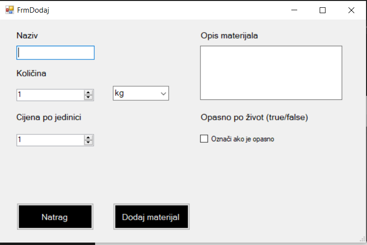

Kada se klikne gumb Dodaj materijal otvara se forma gdje se mogu navesti već navedena svojstva materijala te klikom na gumb Dodaj materijal, stvara se novi materijal s upisanim vrijednostima. Za naziv i opis materijala su obični tekstualni okviri, dok je za količinu i cijenu numerički okvir. Za jedinice mjere postoji padajuća lista, dok za opasno po život postoji potvrdni okvir. Na toj formi postoji i mogućnost vraćanja na prethodnu formu klikom na gumb Natrag. Kako bi se obrisao materijal treba se odabrati red određenog materijala i kliknuti gumb Obriši materijal što će obrisati materijal iz baze te automatski ažurirati popis.
